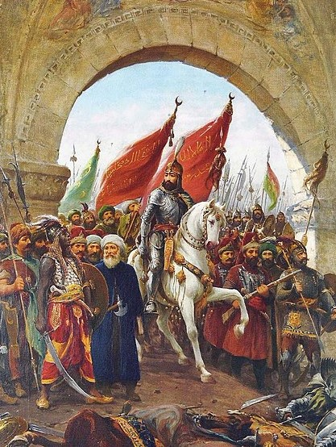
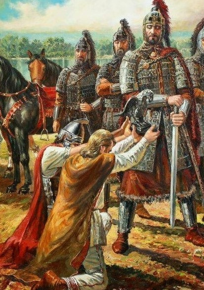
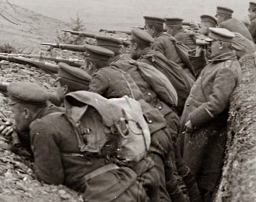
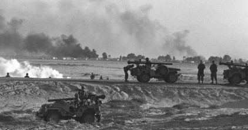
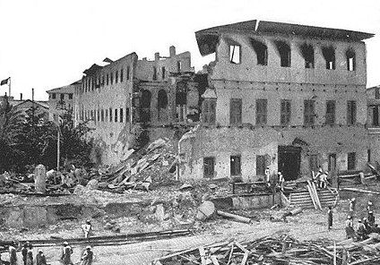
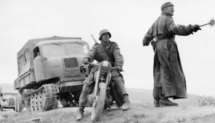

Каталог за исторически битки
Изготвен от Михаела Илиева и Павла Манова
| Битка | Тип на битката | Изображение | Конфилкт | Период | Причина за конфликт | Местоположение | Начало | Край | Победител |
|---|---|---|---|---|---|---|---|---|---|
| Падането на Константинопол | сухопътна |  | Война между Османската империя и Византийската империя | 1452-1453 | Обсада на Константинопол от Османската империя | Константинопол | 1456-05-29 | 1456-05-29 | Османска империя |
| Битката при Онгъла | сухопътна |  | Война между българите на хан Аспарух и Византийската империя | 680 г. сл. Хр. | Преминаване на Аспарух и българската войска отвъд Дунава | местността Онгъла, малка Скития | 0680-07-15 | 0680-07-25 | Прабългари |
| Битката при Дойран | сухопътна |  | Първа световна война | 1914-1918 г. | Силите на Антантата настъпват към българските земи. | Дойранска котловина | 1917-04-22 | 1917-05-09 | България |
| Шестдневната война | сухопътна, въздушна |  | Арабско-израелската война | юни 1967 г. | Така наречената предпазна военна кампания от Израел срещу натиска на арабските съседи на страната. | Близкия изток | 1967-06-05 | 1967-06-11 | Израел |
| Англо-занзибарската война | сухопътна |  | Англо-занзибарската война | 38 минути, 27 август, 1896 г. | Султан Хамад ибн Тувайни, подкрепян от британците, умира. Чрез преврат, братовчед му - Халид ибн Баргаш, подкрепян от Германия, взима властта. | Занзибар | 1896-08-27 | 1896-08-27 | Британска империя |
| Битка при Курск | сухопътна и въздушна |  | Втора световна война | 1939-1945 г. | СССР печели битката при Сталинград, настъпва в контролираните германски територии и образува защитен обрач около град Курск. | Курск | 1943-07-05 | 1943-08-02 | СССР |
| Битка | Тип на битката | Изображение | Конфилкт | Период | Причина за конфликт | Местоположение | Начало | Край | Победител |
|---|---|---|---|---|---|---|---|---|---|
| Англо-занзибарската война | сухопътна | Англо-занзибарската война | 38 минути, 27 август, 1896 г. | Султан Хамад ибн Тувайни, подкрепян от британците, умира. Чрез преврат, братовчед му - Халид ибн Баргаш, подкрепян от Германия, взима властта. | Занзибар | 1896-08-27 | 1896-08-27 | Британска империя | |
| Битка при Курск | сухопътна и въздушна | Втора световна война | 1939-1945 г. | СССР печели битката при Сталинград, настъпва в контролираните германски територии и образува защитен обрач около град Курск. | Курск | 1943-07-05 | 1943-08-02 | СССР | |
| Битката при Дойран | сухопътна | Първа световна война | 1914-1918 г. | Силите на Антантата настъпват към българските земи. | Дойранска котловина | 1917-04-22 | 1917-05-09 | България | |
| Битката при Онгъла | сухопътна | Война между българите на хан Аспарух и Византийската империя | 680 г. сл. Хр. | Преминаване на Аспарух и българската войска отвъд Дунава | местността Онгъла, малка Скития | 0680-07-15 | 0680-07-25 | Прабългари | |
| Падането на Константинопол | сухопътна | Война между Османската империя и Византийската империя | 1452-1453 | Обсада на Константинопол от Османската империя | Константинопол | 1456-05-29 | 1456-05-29 | Османска империя | |
| Шестдневната война | сухопътна, въздушна | Арабско-израелската война | юни 1967 г. | Така наречената предпазна военна кампания от Израел срещу натиска на арабските съседи на страната. | Близкия изток | 1967-06-05 | 1967-06-11 | Израел |
| Битка | Тип на битката | Изображение | Конфилкт | Период | Причина за конфликт | Местоположение | Начало | Край | Победител |
|---|---|---|---|---|---|---|---|---|---|
| Шестдневната война | сухопътна, въздушна | Арабско-израелската война | юни 1967 г. | Така наречената предпазна военна кампания от Израел срещу натиска на арабските съседи на страната. | Близкия изток | 1967-06-05 | 1967-06-11 | Израел | |
| Битката при Дойран | сухопътна | Първа световна война | 1914-1918 г. | Силите на Антантата настъпват към българските земи. | Дойранска котловина | 1917-04-22 | 1917-05-09 | България | |
| Англо-занзибарската война | сухопътна | Англо-занзибарската война | 38 минути, 27 август, 1896 г. | Султан Хамад ибн Тувайни, подкрепян от британците, умира. Чрез преврат, братовчед му - Халид ибн Баргаш, подкрепян от Германия, взима властта. | Занзибар | 1896-08-27 | 1896-08-27 | Британска империя | |
| Падането на Константинопол | сухопътна | Война между Османската империя и Византийската империя | 1452-1453 | Обсада на Константинопол от Османската империя | Константинопол | 1456-05-29 | 1456-05-29 | Османска империя | |
| Битка при Курск | сухопътна и въздушна | Втора световна война | 1939-1945 г. | СССР печели битката при Сталинград, настъпва в контролираните германски територии и образува защитен обрач около град Курск. | Курск | 1943-07-05 | 1943-08-02 | СССР | |
| Битката при Онгъла | сухопътна | Война между българите на хан Аспарух и Византийската империя | 680 г. сл. Хр. | Преминаване на Аспарух и българската войска отвъд Дунава | местността Онгъла, малка Скития | 0680-07-15 | 0680-07-25 | Прабългари |
| Битка | Тип на битката | Изображение | Конфилкт | Период | Причина за конфликт | Местоположение | Начало | Край | Победител |
|---|---|---|---|---|---|---|---|---|---|
| Битката при Онгъла | сухопътна | Война между българите на хан Аспарух и Византийската империя | 680 г. сл. Хр. | Преминаване на Аспарух и българската войска отвъд Дунава | местността Онгъла, малка Скития | 0680-07-15 | 0680-07-25 | Прабългари | |
| Падането на Константинопол | сухопътна | Война между Османската империя и Византийската империя | 1452-1453 | Обсада на Константинопол от Османската империя | Константинопол | 1456-05-29 | 1456-05-29 | Османска империя | |
| Англо-занзибарската война | сухопътна | Англо-занзибарската война | 38 минути, 27 август, 1896 г. | Султан Хамад ибн Тувайни, подкрепян от британците, умира. Чрез преврат, братовчед му - Халид ибн Баргаш, подкрепян от Германия, взима властта. | Занзибар | 1896-08-27 | 1896-08-27 | Британска империя | |
| Битката при Дойран | сухопътна | Първа световна война | 1914-1918 г. | Силите на Антантата настъпват към българските земи. | Дойранска котловина | 1917-04-22 | 1917-05-09 | България | |
| Битка при Курск | сухопътна и въздушна | Втора световна война | 1939-1945 г. | СССР печели битката при Сталинград, настъпва в контролираните германски територии и образува защитен обрач около град Курск. | Курск | 1943-07-05 | 1943-08-02 | СССР | |
| Шестдневната война | сухопътна, въздушна | Арабско-израелската война | юни 1967 г. | Така наречената предпазна военна кампания от Израел срещу натиска на арабските съседи на страната. | Близкия изток | 1967-06-05 | 1967-06-11 | Израел |
| Битка | Тип на битката | Изображение | Конфилкт | Период | Причина за конфликт | Местоположение | Начало | Край | Победител |
|---|---|---|---|---|---|---|---|---|---|
| Битката при Онгъла | сухопътна | Война между българите на хан Аспарух и Византийската империя | 680 г. сл. Хр. | Преминаване на Аспарух и българската войска отвъд Дунава | местността Онгъла, малка Скития | 0680-07-15 | 0680-07-25 | Прабългари | |
| Падането на Константинопол | сухопътна | Война между Османската империя и Византийската империя | 1452-1453 | Обсада на Константинопол от Османската империя | Константинопол | 1456-05-29 | 1456-05-29 | Османска империя | |
| Англо-занзибарската война | сухопътна | Англо-занзибарската война | 38 минути, 27 август, 1896 г. | Султан Хамад ибн Тувайни, подкрепян от британците, умира. Чрез преврат, братовчед му - Халид ибн Баргаш, подкрепян от Германия, взима властта. | Занзибар | 1896-08-27 | 1896-08-27 | Британска империя | |
| Битката при Дойран | сухопътна | Първа световна война | 1914-1918 г. | Силите на Антантата настъпват към българските земи. | Дойранска котловина | 1917-04-22 | 1917-05-09 | България | |
| Битка при Курск | сухопътна и въздушна | Втора световна война | 1939-1945 г. | СССР печели битката при Сталинград, настъпва в контролираните германски територии и образува защитен обрач около град Курск. | Курск | 1943-07-05 | 1943-08-02 | СССР | |
| Шестдневната война | сухопътна, въздушна | Арабско-израелската война | юни 1967 г. | Така наречената предпазна военна кампания от Израел срещу натиска на арабските съседи на страната. | Близкия изток | 1967-06-05 | 1967-06-11 | Израел |
Допълнителна информация за всяка битка
/на някои места може да липсват компоненти поради липса на достатъчна информация за съответната битка/
-
Падането на Константинопол
Събития през войната
- 1456-04-05 : Султан Мехмед II разполага войските си на 5 км от градските стени на Константинопол.
- 1456-04-07 : Османските войски се доближават на 500 м от стените и се разгръщат по цялата им дължина.
- 1456-04-11 : Османските войски се окопават и позиционират артилерията си, а сръбските сапьори започват да подкопават стените на града.
- 1456-04-12 : Османският флот хвърля котва до града. Започва обстрелване на крепостните стени.
- 1456-04-18 : Малък османски отряд напада стените и е отблъснат.
- 1456-04-20 : Три генуезки и един византийски кораб пробиват блокадата, влизат в пристанището и нанасят значителни щети на османския флот.
- 1456-05-07 : Няколко десетки хиляди души от османците правят първите сериозни опити за щурмуване на града. Отблъснати са.
- 1456-05-12 : Няколко десетки хиляди души от османците правят първите сериозни опити за щурмуване на града. Отблъснати са.
- 1456-05-28 : Подготовка на решителния щурм от турците. Към крепостта са предвижени 2000 стълби.
- 1456-05-29 : Три часа преди изгрев слънце започва нападението. Осъществен е пробив по изгрев слънце, настъпва смут в средите на византийците. Малко по-късно е пробит и тила на защитниците - това е краят на Константинопол.
Последствия от войната
- Константинопол става новата столица на Османската империя
- Византийската империя спира да съществува
- Край на европейското Средновековие.
Враждуващи страни
-
Османска империя
:
Лидери:
- Султан Мехмед II
Съюзници:
- Сръбско деспотство
Войници:
Общ брой: 100-130 000
Различни видове:
- Еничари : 45-50 000
- Стрелци : 40 000
- Пехота : 40 000
Оръжия:
- Оръдия :
- Катапулти :
Флота:
/не всички страни имат активна флота/
- Галери : 31
- Лодки : 95
-
Византийска империя
:
Лидери:
- император Константин XI Палеолог
Съюзници:
- Папска държава
- Генуа
- Венецианска република
Войници:
Общ брой: 7-10 000
Различни видове:
- Стрелци : 200
- Пехота : 7 000
Оръжия:
Флота:
/не всички страни имат активна флота/
- Кораби : 26
-
Битката при Онгъла
Събития през войната
- : Стресната от многобройния противник прабългарската армия се оттегля в своето укрепление, издигнато на остров Певки.
- : Войските на Аспарух нанасят тактически удари на ромеите без да правят опити да ги разбият.
- : Ромеите обсаждат укрепения лагер в продължение на 4 дни, след което императорът Константин IV съобщава на войските си, че отива на лечение в Акве Калиде и напуска бойното поле. Това е разтълкувано от войските като опит за бягство.
- : Ромеите започват да отстъпват. Заповедта на императора е да се симулира бягство, за да изкарат българите от укреплението им.
- : Прабългарската армия се възползвала от създалата се психологическа ситуация и неочаквано атакувала превъзхождащата я в пъти византийска войска, като ѝ нанесла поражение.
Последствия от войната
- Първа българска победа над Византийската империя.
- Възможност да се продължат нападенията в Мизия, които принуждават императора да сключи мирен договор с Аспарух.
- Създаване на Българската държава.
Враждуващи страни
-
Прабългари
:
Лидери:
- хан Аспарух
Съюзници:
- Седем славянски племена
Войници:
Общ брой: 10 000
Различни видове:
- Пехота и кавалерия : 10 000
Оръжия:
Флота:
/не всички страни имат активна флота/
-
Византийска империя
:
Лидери:
- император Константин IV Погонат
Съюзници:
Войници:
Общ брой: 25 000
Различни видове:
- Войски от всички теми : 25 000
Оръжия:
Флота:
/не всички страни имат активна флота/
-
Битката при Дойран
Събития през войната
- 1917-04-22 : Атаката започва с тежък четиридневен артилерийски обстрел. Владимир Вазов нарежда денонощен огън по позициите на британците.
- 1917-04-25 : Английската пехота започва атаката си, като 12 роти атакуват позициите на втора бригада и след кървава битка успяват да завземат точките „Нерезов“, „Княз Борис“ и „Пазарджик“. След контраатака на българите, британците са отблъснати с тежки жертви и към 8 часа вечерта се оттеглят.
- 1917-04-27 : Поради силния български огън, англичаните отстъпват към първоначалните си позиции.
- 1917-05-08 : Британците правят нови опити за пробив. Главното нападение започва в 9 часа с британски войски на 5 вълни към българските позиции. Британците претърпяват четири провалени нощни атаки.
- 1917-05-09 : Артилерийският дуел продължава и на 9 май, но поради тежки загуби англичаните изоставят всички свои атаки. Победа за българите.
Последствия от войната
- Сраженията утихват за 16 месеца. Това позволява на противниците да възстановят силите си.
Враждуващи страни
-
Англия
:
Лидери:
- Джордж Милн
Съюзници:
Войници:
Общ брой: 43 000
Различни видове:
- Пехотинци - 3 девизии : 43 000
Оръжия:
- Оръдия : 160
- Минохвъргачки : 110
- Къртечници : 440
Флота:
/не всички страни имат активна флота/
-
България
:
Лидери:
- генерал Владимир Вазов
Съюзници:
Войници:
Общ брой: 30 000
Различни видове:
- Пехотинци - 1 девизия, с подкрепления : 30 000
Оръжия:
- Оръдия : 147
- Минохвъргачки : 35
- Къртечници : 130
Флота:
/не всички страни имат активна флота/
-
Шестдневната война
Събития през войната
- 1967-06-05 : Израел нанася въздушни удари по египетски летища. Почти целите военно-въздушни сили на Египет са унищожени.
- 1967-06-07 : Египтяните попадат в израелски капан в прохода Митла.
- 1967-06-09 : Израелците започват настъпление през Дан Баниас в подножието на планината Хермон - Сирийски фронт.
- 1967-06-10 : Израелските сили от различни посоки са се приближили до ключовата цел на настъплението – Кунейтра. До вечерта градът е бил превзет. В 19:30 ч. на същият ден страните се договорят за прекратяване на огъня.
- 1967-06-11 : Подписано е примирие.
Последствия от войната
- Израел поема контрол над ивицата Газа и Синайския полуостров от Египет, Западния бряг и Източен Йерусалим от Йордания и Голанските възвишения от Сирия - утроява площта си.
Враждуващи страни
-
Израел
:
Лидери:
- генерал Моше Даян
Съюзници:
Войници:
Общ брой: 264 000
Различни видове:
- Редовна войска : 50 000
- Войници в резерва : 214 000
Оръжия:
- Танка :800
- Военни самолети :300
Флота:
/не всички страни имат активна флота/
-
Съюз от арабски държави
:
Лидери:
- Гамал Абдел Насер
- Нуредин Ал-Атаси
- Хюсеин Бил Тилал
- Абдул Рахмад Ариф
- Султан Абдулазис
Съюзници:
- Египет
- Сирия
- Йордания
- Ирак
- Саудитска Арабия
Войници:
Общ брой: 700 000
Различни видове:
- Редовна войска : 567 000
- Войници в резерва : 240 000
Оръжия:
- Танка :2 500
- Военни самолети :957
Флота:
/не всички страни имат активна флота/
-
Англо-занзибарската война
Събития през войната
- 1896-08-27 : На 27 август в 8:00 ч. пратеник на султана иска организиране на среща с Базил Кейв, британския представител в Занзибар.
- 1896-08-27 : 8:30 - Халид ибн Баргаш изпраща известие, съобщаващо, че не възнамерява да се предава и не вярва, че британците ще си позволят да открият огън.
- 1896-08-27 : 9:00 - Британски кораби откриват огън по султанския дворец.
- 1896-08-27 : 9:05 - Единственият занзибарски кораб „Глазгоу“ отговоря на стрелбата, прицелвайки се в британския крайцер „Сейнт Джордж“, който веднага открива огън от тежките си оръдия почти от упор, незабавно потопявайки противника си.
- 1896-08-27 : 9:38 - Британски снаряд поразява флагщока на двореца и сваля занзибарскотознаме. Обстрелът е прекратен и битката приключва.
Последствия от войната
- Халид ибн Баргаш търси убежище в германското посолство, откъдето е изведен чрез хитрост.
- Убедителната победа на британците е една от причините в следващите 67 години британско управление в Занзибар да няма бунтове.
Враждуващи страни
-
Британска империя
:
Лидери:
- Лойд Матюс
Съюзници:
Войници:
Общ брой: 1050
Различни видове:
- Редовни войници : 1050
Оръжия:
Флота:
/не всички страни имат активна флота/
- Крайцери :2
- Канонерски лодки :3
- Занзибарски султанат
:
Лидери:
- Халид ибн Баргаш
Съюзници:
Войници:
Общ брой: 2800
Различни видове:
- Редовна войска : 2800
Оръжия:
- 12-фунтови оръдия :2
- Оръдия от 17 век :3
Флота:
/не всички страни имат активна флота/
- Яхта :1
-
Битка при Курск
Събития през войната
- 1943-07-05 : Германските войски започват настъпление от север и от юг.
- 1943-07-12 : Прелом в битката. Включват се съветските стратегически резерви. Състои се най-голямото в историята танково сражение. Германската армия преминава в отбрана.
- 1943-07-16 : Германия започва отстъпление.
- 1943-07-26 : Германските сили остъпват Орел
- 1943-08-05 : Орел е освободен
- 1943-08-12 : Руската армия достига до Краков.
- 1943-08-23 : Краков е освобеден. Край на битките при Курската дъга.
Последствия от войната
- Битката при Курск извършва коренен прелом в хода на войната на Източния фронт и съществено влияе върху хода на Втората световна война.
- Стратегическата инициатива окончателно преминава в ръцете на съветското командване.
- Германия не успява повече да инициира големи военни действия на Източния фронт.
- Сталин отстъпва командването на Червената армия на доказалите се генерали, докато Хитлер губи позиции сред армията.
Враждуващи страни
- Германска империя
:
Лидери:
- Ерих фон Манщайн
- Гюнтер фон Клуге
Съюзници:
Войници:
Общ брой: 940 900
Различни видове:
- Пехотинци : 780 900
- Резерв : 160 000
Оръжия:
- Танка :3 253
- Минохвъргачки и оръдия :9 467
- Военни самолети :2 110
Флота:
/не всички страни имат активна флота/
- Съветски съюз
:
Лидери:
- Георги Жуков
- Александър Василевски
Съюзници:
Войници:
Общ брой: 2 500 000
Различни видове:
- Пехотинци : 1 426 352
- Резерв : 1 073 648
Оръжия:
- Танка :7 360
- Минохвъргачки и оръдия :47 416
- Военни самолети :3 500
Флота:
/не всички страни имат активна флота/